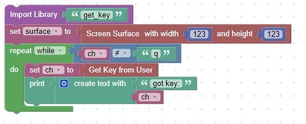

<h1>Get Key</h1>
For this code you will need to use a library function called get_key<br>
This code will get a key from the user and print it to the console until a 'q' key is pressed.<br>
<br>
<hr>
<center></center>